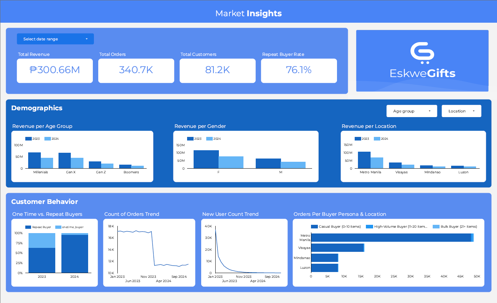

Marketing Analytics Dashboard
E-commerce Profitability Case Study
Project Overview
Client: EskweGifts (fictional start-up) Tools: SQL · Looker Studio · Google BigQuery Focus: Built a Looker Studio dashboard with SQL-transformed data from 340K+ transactions to diagnose YoY revenue decline.
Highlights:- ✅ Scored 100% on final technical exam using unfamiliar dataset
- ✅ Applied joins, subqueries, CASE WHEN, aggregations, and validation checks
- ✅ Built a working data dictionary and performed end-to-end analysis under time constraints
| 👉 Discover The Strategy That Turned Data into Direction🔍 |
📖 Read Full Project Summary
Marketing Analytics Dashboard — EskweGifts Case Study
As part of the Data Analytics Bootcamp, I completed a 7-day sprint project focused on diagnosing revenue decline and identifying process improvement opportunities for EskweGifts, a start-up offering highly customizable gifts. The project was scoped to a marketing analytics lens, requiring my team to analyze customer behavior, product performance, and business trends through exploratory and inferential data analysis. Our final deliverable was a Looker Studio dashboard, powered by SQL-transformed data, that provided strategic insights and SMART recommendations to address the company’s year-over-year revenue decline and customer loss.
The challenge involved both strategic framing and technical execution. We had no prior context on the company beyond the dataset, so I began by operationalizing the business problem: translating vague symptoms (e.g., shrinking margins) into two structured marketing questions — “Why is the decline happening?” and “How can the company monitor and improve marketing-driven processes?” From this anchor, I led the data profiling process, assessed dataset limitations, and created a detailed data dictionary to support consistent team understanding. The dataset included over 340K transactions from 2023–2024, covering customer demographics, location data, SKUs, discount usage, order volume, purchase dates, and more. This was used to identify key customer segments, infer purchase behaviors and preferences, and generalize buyer personas.
A key challenge was navigating a marketing analytics context with no industry benchmarks or marketing spend data, which meant I had to infer performance issues through proxy indicators like order frequency, repeat buyer rate, and first-time buyer conversion. I used Generative AI tools to accelerate my learning curve on customer retention metrics, marketing funnel logic, and SQL transformation best practices. These tools helped me bridge domain knowledge gaps quickly while refining queries and developing meaningful dashboard visuals.
I led the design and development of the three core sections of the dashboard:
- Business Performance Overview: High-level KPIs (Revenue, Order Count, New vs. Repeat Buyers, Customer Growth), designed to diagnose the overall health of the business.
- Customer Demographics Breakdown: YoY revenue trends segmented by age group, gender, and location to assess shifts in buyer personas and regional market engagement.
- Customer Behavior & Retention: Patterns in purchase frequency, repeat behavior, and acquisition trends to evaluate the effectiveness of marketing funnels and lifecycle retention.
Through structured SQL transformations and dynamic Looker Studio visuals, I connected metrics to strategic questions. For example, a 95% increase in repeat buyers alongside an 11.6% customer loss revealed that the business was heavily reliant on repeating, old customers and failing at new customer acquisition. Similarly, revenue drops in certain regions despite growth in others hinted at possible logistical or demand-related barriers.
I authored the full dashboard presentation script, delivered the final walkthrough to a panel of instructors and data professionals, and facilitated the Q&A, where I fielded questions on our methodology, business logic, and recommended actions. I also coordinated the project timeline, delegated tasks based on team strengths, and documented mentor feedback for future implementation.
Datasets Used:
orders.csv— Transaction-level data (Order ID, Purchase Date, Product, Revenue, Customer ID)users.csv— Demographic data (Customer ID, Age Group, Gender, Location)voucher.csv— Discount and promo data (Voucher Type, Voucher Amount)sku.csv— Product details (Customization level, SKU Category)
Sample Analytical Problems Solved:
- Identified the decline in first-time buyers despite high repeat rates, prompting recommendations to revive customer acquisition channels.
- Uncovered regional disparities in revenue growth, highlighting underperforming locations for targeted outreach.
- Compared YoY demographic revenue trends, revealing shifting target markets (e.g., Gen Z growth, Millennial decline).
Key Skills and Tools Strengthened:
- SQL for Data Analysis: Wrote queries to join, filter, and aggregate customer, order, SKU, and voucher data; computed key metrics like repeat rate, order frequency, and segment-based revenue trends.
- Looker Studio Dashboarding: Designed a multi-section dashboard using stacked bar charts, scorecards, time-series visuals, and filter controls to enable exploratory marketing analysis.
- Customer Segmentation: Applied marketing frameworks to analyze customers by age group, gender, and region; uncovered key differences in spending behavior and retention likelihood.
- KPI Monitoring Design: Selected and tracked meaningful KPIs aligned with marketing objectives, such as conversion rate, repeat purchase delay, and regional performance shifts.
- Data Profiling & Documentation: Constructed a data dictionary and outlined dataset scope, missing fields, and assumptions, helping the team maintain consistency throughout.
- Dashboard Storytelling: Designed an intuitive narrative structure (What is happening → Who is impacted → How they behave) to align insights with marketing decision-making.
- Team Collaboration: Delegated tasks strategically, monitored progress, and ensured consistent visual and analytical alignment across all dashboard components.
- Presentation & Communication: Delivered a clear, confident walkthrough of the dashboard to stakeholders and led Q&A with structured, data-backed responses.
This sprint demonstrated my ability to synthesize ambiguous business problems into structured analytical questions, manage a collaborative data project end-to-end, and use data storytelling to influence marketing strategy — all while strengthening my fluency in Power BI, customer analytics, and cross-functional communication.
🎁 Bonus: Full Case Study PDF 🛠️ Challenge Me—Let’s Build Solutions